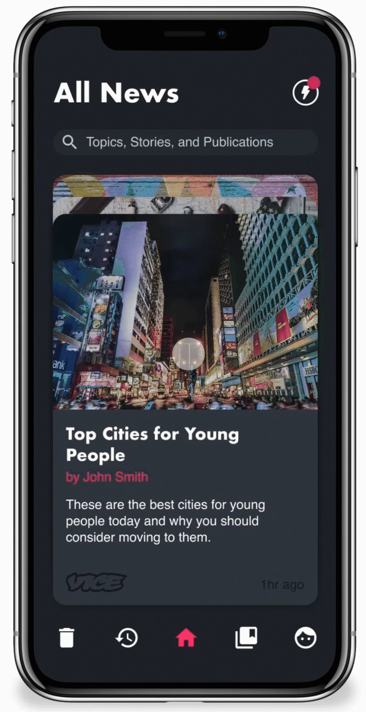
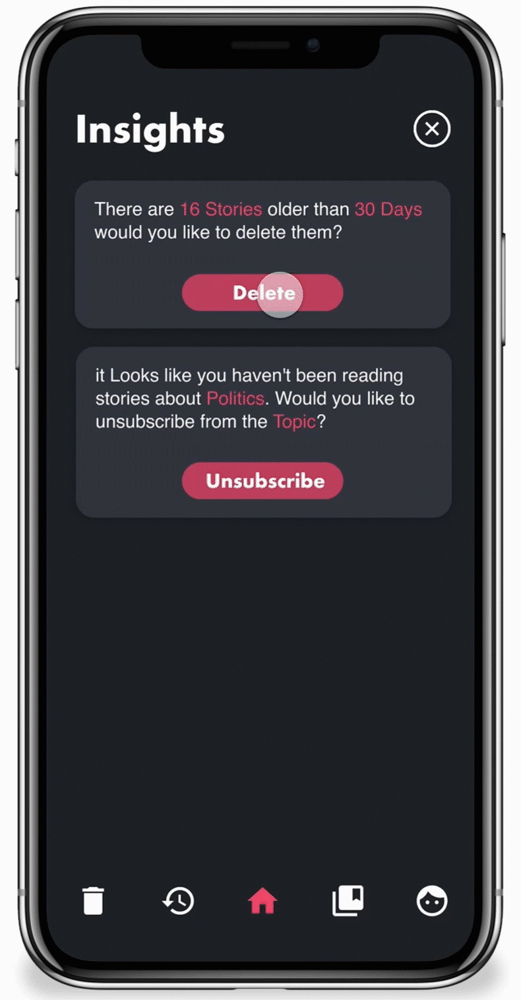

People are constantly overwhelmed by the amount of information they are asked to consume on a regular basis. We are inundated with heaps of news, only a small percentage of which we actually care about. So I designed a mobile first news aggregation app that enables users to better manage and compartmentalize the news they consume.
Making News Actionable
News is typically presented today as a never ending feed. People endlessly scroll to the bottom to see if they missed something interesting even if it isn't relevant anymore. News Deck avoids this by presenting news as a finite deck of cards which are intuitive to sort and interact with.


Getting Insights
In addition to making news more actionable, news deck will actively make suggestions for how the user can reduce the amount of news in their feed. These "Insights" are based on user behavior and can either be acted on or dismissed.